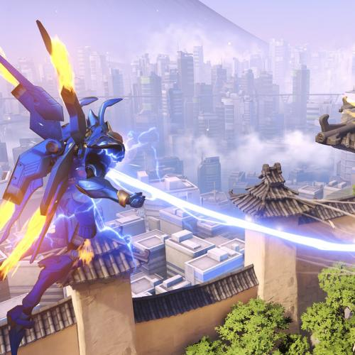
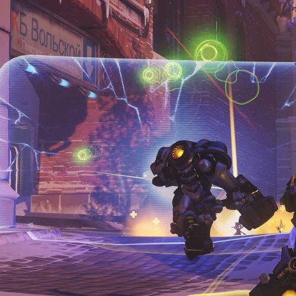
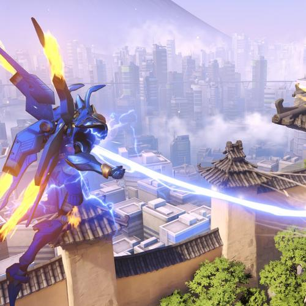
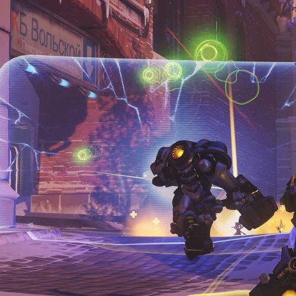

click to enlarge image
Overwatch
l'histoire d'Overwatch se situe dans un monde néo-futuriste (plus précisément en 2074), des années après la résolution d'une guerre impliquant robots et humains, appelée Crise des Omniums. Les deux camps se sont en effet affrontés suite à l'hostilité qu'avaient manifesté plusieurs Omniaques, des robots, qui, contrairement à leurs congénères, déclaraient être dotés d'une conscience...si tu veux la suite renseigne toi sur wikipedia.